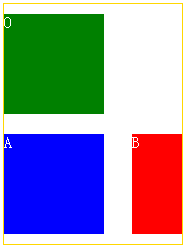

KB011: 浮动( Floats )
浮动( Float )概述
浮动和文字环绕
浮动框就是一个框在当前行被向左或向右挪动(偏移)，它不在常规流中，浮动框由浮动元素的框组成。 浮动框( 'float', 'floated' or 'floating' box )最有趣的特性是内容(Line Box)可以沿着它的边缘渲染（设置 'clear' 属性禁止此特性 ）。 内容排列在沿着左浮动框的右边排列，而沿着右浮动框的左边排列，也就是我们常说的文字环绕效果。
示例代码：
<!DOCTYPE html>
<html>
<head>
<title>Float example</titel>
<style type="text/css">
span {
float: left;
}
P {
margin: 2em;
border: 1px solid red;
width: 200px;
}
</style>
</head>
<body>
<p>
<span style="width:100px; height:100px; background-color:green; margin:20px;"></span>
The IMG box is floated to the left. The content that follows is formatted to the
right of the float, starting on the same line as the float.
</p>
</body>
</html>
文字应当围绕绿块的外边界排列，文字和绿色的块之间有空白。
示意图：
浮动框的位置
一个浮动框，会被向左或向右偏移，直到它的外边界1接触到它包含块2的边界或另一个浮动元素的外边界1， 如果存在一个行框，浮动框的顶边会和当前行框的顶部对齐。
如果水平方向没有足够的空间放置浮动元素，它将向下移动，直到有足够的空间或没有更多的浮动元素为止。
浮动元素会缩短行框
由于浮动框并不在常规流3中，在该浮动框之前或之后创建的非定位框垂直排列，就好象浮动框并不存在一样。 然而，浮动框之后创建的行框4会被缩短，为浮动框提供空间。如果被缩短的行框无法再容纳更多的内容， 它将向下移动，直到有足够的空间或没有更多的浮动元素为止。当前行里浮动框前的任何内容，都将被重新排列到该浮动另一侧的第一个可用行里。 也就是说，如果在遇到左浮动框之前，行内框被放置到行上，剩余的行框空间足够容纳该左浮动框，那么，左浮动框就会被放置在该行上， 并与该行框的顶端对齐，然后，已经在行上的行内框被相应地移动到该浮动框的右侧（右侧成了该左浮动框的另一侧），反之亦然，对于 rtl 和右浮动框也是一样。
如上文字环绕浮动元素的例子，包含文字的行框被缩短，是包含块减去浮动元素的外边距 margin 的宽度。其中，"The content" 两字，分别被放到了两行， 因为，一行中的剩余空间无法再容纳 "content"。
TABLE 元素、块级替换元素、BFC元素和浮动元素
TABLE 元素、块级替换元素或者在常规流中创建了块格式化上下文5的元素，它们的 border box1 在同一个块格式化上下文5中， 一定不能覆盖任何浮动元素。如果有必要，实现工具应该通过把元素放置到前面浮动元素的下面，以清理先前说到的元素，但是，如果有足够的空间， 也可以把它紧临浮动元素放置。
示例代码：
<!DOCTYPE html>
<html>
<head>
<title>Float example</title>
<style type="text/css">
#C {
margin: 2em;
border: 1px solid red;
width: 200px;
overflow: hidden;
}
</style>
</head>
<body>
<div id="C">
<div id="A" style="width:50px; height:50px; background-color:green; margin:20px; float:left;">A</div>
<div id="B" style=" width:50px; background-color:blue; overflow:hidden;">B</div>
</div>
</body>
</html>
这时，B 的宽度为 50px，它和浮动元素 A 的包含块都是 C，宽度为 200px。浮动元素在放置后，还有足够的空间放置 B，所以，B 被紧挨着 A 的 margin 框被放置。
示意图：
增大 B 的宽度至 150px 后：
注：
- 关于外边界、border box，请见： W3Help - KB006: CSS 框模型( Box module )
- 关于包含块，请见： W3Help - KB008: 包含块( Containing block )
- 关于常规流，请见： W3Help - KB007: 可视化格式模型( visual formatting model )简介
- 关于行框，请见： KB010: 常规流( Normal flow ) 中的行内格式化上下文中的行框。
- 关于块格式化上下文，见：KB010: 常规流( Normal flow ) 中的块格式化上下文的内容。
浮动( Float )特性
| 值 | left | right | none | inherit |
| 初始值 | none |
| 适用于 | 所有元素 |
| 可否继承 | 否 |
| 百分比 | N/A |
适用元素
可设置给任意元素，但只适用于生成非绝对定位框的元素 1。
特值的含义
- left：该元素产生一个向左浮动的块框。内容在该框的右边排列，就是上一篇帖子中所说的文字环绕，起点是框的顶部（会受'clear'属性的影响）。
- right：与 left 类似，框向右侧浮动，内容在该框的左侧排列，从顶部开始。
- none：该框不浮动。
注：
- 关于绝对定位和浮动之间的关系，请参见： KB009: CSS 定位体系概述 中的 'display'、'position' 和 'float' 的相互关系部分
浮动( Float )框定位细则
根元素无所谓是否浮动，没有实际意义，因此对于根元素的浮动，浏览器应该当作 "none"。
浮动框定位的宗旨是，在其左、上、右外边界不溢出包含块边界的情况下，尽量的靠上、靠左（"float:left"）或靠右（"float:right"）放置，但是不能高于它前面生成的块框、浮动框和行框的顶边，并且不能与其他浮动元素重叠。
以下规则中说到的其他元素，都和浮动元素处于相同的块格式化上下文 1中。
1. 浮动框不能在其浮动方向上溢出包含块2
左浮动框的左外边界3不可以出现在它包含块2左边界之左。对于右浮动的元素也有类似规则。
左浮动元素的左外边界不能溢出包含块的左边界。右浮动元素不能溢出包含块的右边界。
2. 浮动框的定位受同向浮动框的影响
如果当前框是左浮动框，并且在源文档中存在更早生成的左浮动框，那么对于任意这些先前的框，要么当前框的左外边出现在先前框的右外边之右，要么它的顶部必须在先前框的底部之下。对于向右浮动的框也有类似的规则。
也就是说，当前浮动框的定位会受到先前生成的同向浮动框的影响，它们不能相互遮盖。当前浮动框需要紧挨着先前同向浮动框的外边界进行定位，如果当前行空间不足，则折行，放置到它之前浮动框的下面。
3. 浮动框与不同向浮动框不可重叠
左浮动框的右外边不可以出现在它右侧的任何右浮动框的左外边之右。对于向右浮动的元素也有类似的规则。
也就是说，同一行中不同向的浮动框不能够有互相折叠的现象。
4. 浮动框外顶边界不能溢出包含块2
浮动框的顶外边不能高于它包含块的顶部。另外，当一个浮动框发生在两个外边距折叠的中间时，浮动元素的定位好像它有另一个空的块级父框位于常规流中。
也就是说，当浮动框处于两个发生外边距折叠的地方时，会被当作包含在一个空的块框中，它上面和下面的外边距会穿过它发生外边距折叠，当它不存在。
<style type="text/css">
div {
width: 100px;
height: 100px;
background-color: green;
color: white;
margin: 50px;
}
</style>
<div>A</div>
<div style="float:left; margin:10px; background-color: red;">O</div>
<div>B</div>
以上代码中，3 个 DIV 元素的包含块是初始包含块。浮动框 O 处于 A 和 B 的中间，不应当妨碍 A 和 B 的外边距折叠。
示意图：
此处在 IE 中存在兼容性问题4，请自行测试。
5. 浮动框的顶边不可以高于源文档中先前元素产生的块框或浮动框的顶
示例代码：
<style type="text/css">
div {
width: 100px;
height: 100px;
background-color: green;
color: white;
margin: 10px 0;
}
</style>
<div style="width:180px; height:auto; overflow:hidden; background:white; border:1px solid gold;">
<div style="float:left;">O</div>
<div style="float:left; background-color: blue;">A</div>
<div style="float:right; width:50px; background-color: red;">B</div>
</div>
O、A、B 都是浮动元素，O、A 是左浮动元素，根据宽度计算，A 应该处于 O 的下一行。B 是右浮动浮动元素。按照标准，B 浮动的时候，其顶边不应高于 A 的顶边，因此，B 不会放到 O 的右侧显示。
示意图：

改变代码中 A 和 B 的位置，即可让 B 显示在 O 的右侧，读者可自行测试。
6. 浮动框与行框
浮动框的顶边不可以高于源文档中先前元素产生的任何包含一个框的行框的顶。
<div style="width:400px; height:50px;border:1px solid red;">
<div style="background-color:green; float:left; width:250px;">left</div>
<span style="border:1px solid yellow;">blublublublublublublublublublublublu</span>
<div style="background-color: green; float:right;">right</div>
</div>
示意图：
按照规则，right 浮动框的顶边不能高于含有行内框的行框的顶边。
IE 在处理行框与浮动框之间位置关系时，跟其他浏览器不同5，可自行验证。
7. 浮动框不能因同方向浮动元素而在非浮动方向上溢出包含块
左浮动框左边如果有另外一个左浮动框，它的右外边不可以出现在它包含块的右边之右。（或者比较宽松的要求是：一个左浮动不可以超出右边， 除非它已经尽可能地靠左排列。）对于向右浮动的元素也有类似的规则。此条规则也是限定浮动元素的位置范围， 不可超出包含块。与第 1，2 条有关。
8. 浮动框要放置得尽可能的高。
注意在前面关于其顶边规则的限制下，满足此条。
9. 左浮动框必须尽量靠左放置，右浮动框必须尽量靠右放置。在更高的位置和更靠左或靠右的位置间，选择前者。
和第 8 条一起，可以算是浮动的大规则，说明浮动框要尽量的向上向左或向上向右放。
10. 附加规则：'clear' 特性值不是 'none' 的浮动框
对于 'clear' 特性值不是 'none' 的浮动框，其上外边界( top margin edge )必须低于前面所有左浮动框（'clear' 特性值为 "left" 时），或者右浮动框（"clear:right"），或者左右浮动框("clear:both")的下外边界。
示例代码：
<div id="Container" style="width:300px; height:100px; border:1px solid gold; ">
<div id="DIV1" style="float:right; width:150px; height: 50px; background-color:green; ">float:right;</div>
<div id="DIV2" style="float:left; width:100px; height: 50px; background-color:red; clear:right;">clear:right float:left;</div>
</div>
示意图：
这条补充规则，IE 中没有很好的贯彻6，您可以自行验证。
注:
- 关于块格式化上下文，见：W3Help - KB010: 常规流( Normal flow ) 相关部分。
- 关于包含块，请见： W3Help - KB008: 包含块( Containing block )
- 关于外边界，请见： W3Help - KB006: CSS 框模型( Box module )
- 关于此兼容性问题，请见： W3Help - RB8004: IE6 IE7 IE8(Q) 中浮动元素和绝对定位元素某些情况下会影响普通流中毗邻 'margin' 的折叠
- 关于此兼容性问题，请见： W3Help - RM8005: IE6 IE7 IE8(Q) 中行内元素后相邻的浮动元素在某些情况下会折行放置在之前行内元素所在行框的底部
- 关于此兼容性问题，请见： W3Help - RM8008: IE6 IE7 IE8(Q) 中对浮动元素上 'clear' 特性的解释出现错误，使其自身位置和其后浮动元素的位置与其他浏览器中不同
控制紧接浮动的排列 - 'clear' 特性
'clear' 特性是对浮动框和常规流中框的一种位置关系上的平衡。
| 值： | none | left | right | both | inherit |
| 初始值： | none |
| 适用于 | 块级元素 |
| 可否继承 | 否 |
| 计算值 | 同设定值 |
该特性表明一个元素框的哪一边不可以和先前的浮动框相邻。'clear' 特性不考虑它自身包含的浮动子元素和不处于同一个块格式化上下文中的浮动元素。
对于插入框，该属性适用于插入框所属的最后的块框。
间隙( Clearance )以元素顶外边距上方空白的方式被引入。它用来把元素垂直（典型情况是向下）推过浮动框。它是一个值1。
'clear' 特性的值
- left | right | both：生成框的间隙，是指设置足够的(空白区)， 以使元素的顶边框边界( top border edge )放置到由源文档中较早元素生成的任何左浮动框(left)或右浮动框(right)或左右浮动框(both)的底外边(bottom outer edge， 即底外边界)之下。
- none：对考虑到浮动后的框的位置没有约束。
可以简单的认为设置了 'clear' 特性值的元素，其 top border edge 要放在相关的浮动元素的 bottom margin edge 之下。注意这两种元素接触边界的区别。一个是 border，一个是 margin。
示例代码：
<div style="width:300px; height:100px; background-color:green; float:left; border:5px solid red; margin-bottom:10px; "> float </div> <div style="clear:left; width:350px; height:50px; background-color:green; border:5px solid yellow; margin-top:50px;"> clearance </div>
示意图：
这与外边距折叠无关，因为浮动元素不与其他元素发生外边距折叠2。
浮动元素上的 'clear' 特性
当 'clear' 特性被赋予浮动元素时，它将导致浮动框定位规则的修正，另外一条限制（第10条）被追加。
注：
- 关于此值的计算法则，请参见： W3C CSS2.1 - 9.5.2 Controlling flow next to floats: the 'clear' property
- 请见 W3Help - KB006: CSS 框模型( Box module ) 的外边距折叠部分。
测试环境
| 操作系统版本: | Windows 7 Ultimate build 7600 |
|---|---|
| 浏览器版本: |
IE6 IE7 IE8 Firefox 3.6.10 Chrome 7.0.517.0 dev Safari 5.0.2 Opera 10.62 |
| 测试页面: | |
| 本文更新时间: | 2010-09-26 |
关键字
float clear 浮动定位规则